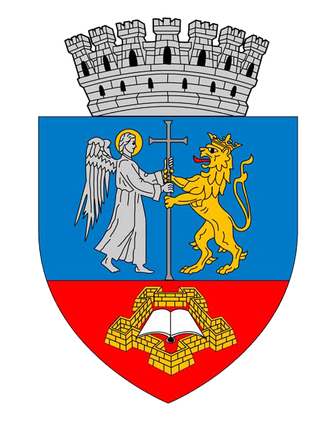

Etimologia toponimului Oradea
| Etimologia toponimului Oradea nu este cunoscută cu exactitate. În 1658 a fost pentru prima dată consemnată forma denumirii românești Oradea, de către cărturarul Miron Costin în Letopisețul Țării Moldovei și redescoperită de Nicolae Iorga. |
| Se presupune că această denumire provine din combinarea cuvintelor turcești "orada/oraya" (în acel loc) cu denumirea maghiară a orașului, Várad. "Orad" seamănă foarte mult cu "Várad", denumirea ungurească veche. După expediția turco-tătaro-moldo-valahă din 1658, soldații turci i-au auzit pe localnici că rostesc "Varad" și au preluat sunetul ca familiarul "orad", prin ceea ce se numește "etimologie populară". Numele unguresc Varad împreună cu "orad", "orada" și "oraya" a dat forma "Oradia", pătrunsă apoi și în limba română ca urmare a cooperării româno-turce din acea perioadă, trupele auxiliare moldo-valahe însoțindu-i pe turci cel puțin în expediția din 1658. |
| Denumirea originală "Oradia" s-a pierdut apoi în negura timpului, stăpânirea turcilor asupra Oradiei durând doar trei decenii. Turcii au fost alungați de către austrieci - care numeau orașul Wardein - după ce au distrus tot orașul. În secolul al XIX-lea, de exemplu, denumirea "Oradia" nu mai exista. Prima carte tipărita la Oradea în limba română - cert atestată - figurează ca fiind tipărită în "Urbea Mare". |
| Cel mai probabil, marele istoric Nicolae Iorga redescoperă vechea formă "Oradia" în opera lui Costin și așa se face că, după Primul Război Mondial, în 1919, când Regatul României preia orașul - majoritar de limbă maghiară pe atunci - forma Oradia Mare redevine denumire oficială românească. Așa apare și pe primele cărți poștale din 1921. În câțiva ani devine Oradea Mare și apoi doar Oradea. |

| Declinarea substantivului Oradea |
| forma |
Singular |
Plural |
| Nominativ-Acuzativ |
Oradea |
invariabil |
| Articulat |
Oradea |
invariabil |
| Genitiv-Dativ |
Oradiei |
invariabil |
| Vocativ |
- |
invariabil |
Realizat de Vlad Luncan - 2022